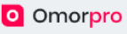

<mat-toolbar>
  

  <span class="spacer"></span>
  <mat-select (selectionChange)="changeLang($event.value)" [(ngModel)]="lang">
    <mat-option value="en">English</mat-option>
    <mat-option value="es">Español</mat-option>
    <mat-option value="fr">Français</mat-option>
  </mat-select>
  <button
    mat-icon-button
    class="example-icon"
    aria-label="Example icon-button with share icon"
    (click)="toggleColorMode()"
  >
    <mat-icon *ngIf="colorMode === 'dark'">dark_mode</mat-icon>
    <mat-icon *ngIf="colorMode === 'light'">light_mode</mat-icon>
  </button>
  <button mat-icon-button class="example-icon" (click)="toggleSidenav()">
    <mat-icon>menu</mat-icon>
  </button>
</mat-toolbar>
